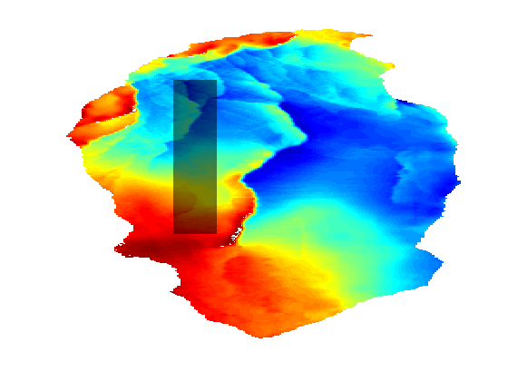
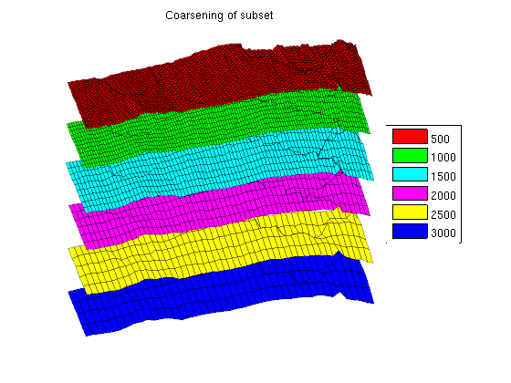
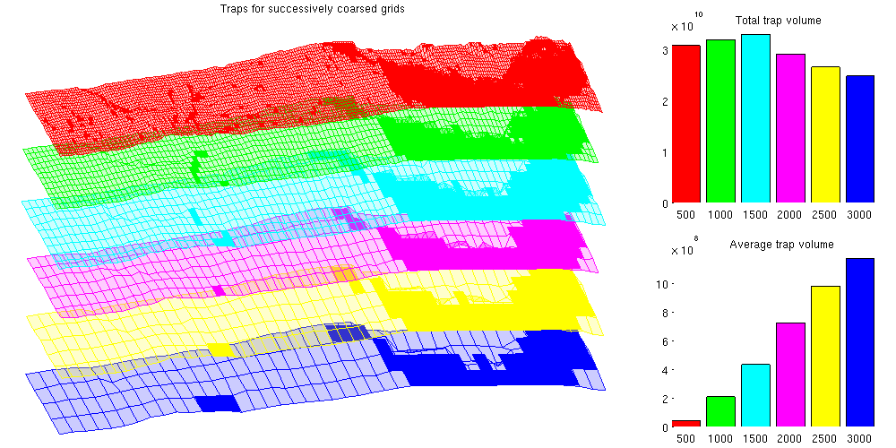
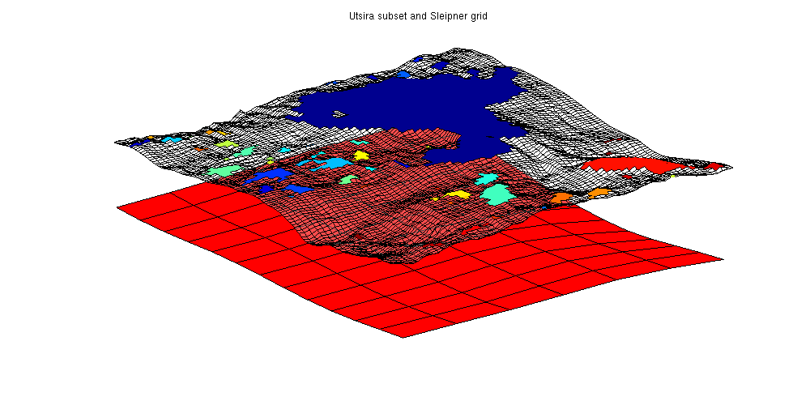
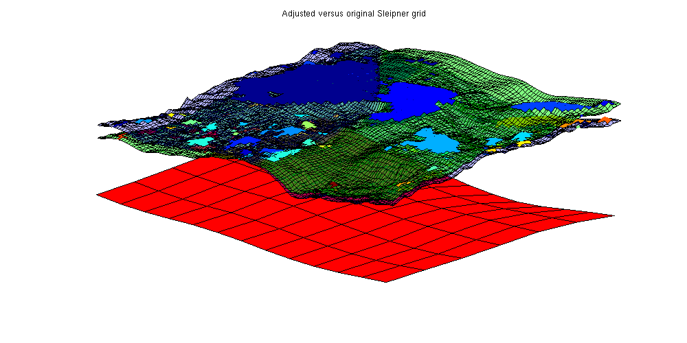
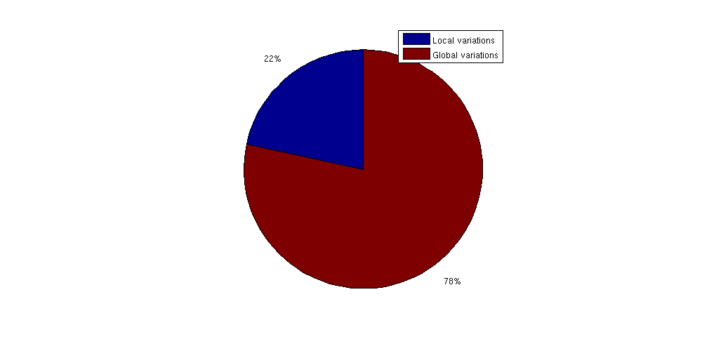

Contents
- Example demonstrating the effects of coarsening and scales on trapping
- Generate grids and trapping for the Johansen formation
- Plot a subset of Johansen with different degree of coarsening
- The effect of coarsening on trapping analysis
- Estimate the degree of coarsening in Atlas grids
- Estimate the lost local oscillations per area
- Extrapolate this estimate to the whole Utsira formation
- Get another estimate by removing global trends
- Find new trapping volume
- Extrapolate this estimate to the whole Utsira formation
- Compare trap of local variations to global variations
Example demonstrating the effects of coarsening and scales on trapping
When working with subsea reservoirs coarsening will always be a factor:
- Simulations on very large grids become prohibitively expensive in terms of computing power very fast.
- All grids are essentially coarse approximations of highly complex geometry. Different grids have a different scale for each cell depending on what kind of data was used to produce the grid in the first place and the intended usage of the datasets.
This example demonstrates the effects of geometry coarsening on the CO2 Storage Atlas grids, with a special focus on structural trapping. To gain a rough of estimate the information which is missing in the coarse Atlas grids, we will also compare the relatively fine scale Sleipner grid with the same region in the Utsira formation, where Sleipner is located.
require gridtools coarsegrid deckformat
Generate grids and trapping for the Johansen formation
We generate six realizations of the Johansen formation from the CO2 Storage Atlas: The first is the full dataset, the second coarsened by a factor 2 in both i and j directions, the third a factor 3 and so on. This gives a set of grids where the largest has approximately 80,000 cells while the smallest has ~2,000 cells. In the finest grid each cell has a resolution of 500x500 m^2 per cell while the coarsest has 3000x3000 m^2: Both fairly large in terms of typical simulation grids, and the coarsest is several orders of magnitude larger than the finest.
N = 6; [Grids res] = deal(cell(numel(N),1)); for i = 1:N gr = getAtlasGrid('Johansenfm', 'coarsening', i); G = processGRDECL(gr{1}); % Create top surface grid Gt = topSurfaceGrid(computeGeometry(G(1))); Grids{i} = Gt; % Create trapping and store volumes of each trap res{i} = trapAnalysis(Gt, true); res{i}.volumes = volumesOfTraps(Gt, res{i}); end
Trap level 1: 1294 traps identified Trap level 2: 183 traps identified Trap level 3: 26 traps identified Trap level 4: 7 traps identified Trap level 5: 2 traps identified Warning: purging 119 bad traps with 0 spill value. Start find rivers Trap level 1: 327 traps identified Trap level 2: 54 traps identified Trap level 3: 11 traps identified Trap level 4: 2 traps identified Warning: purging 34 bad traps with 0 spill value. Start find rivers Trap level 1: 163 traps identified Trap level 2: 27 traps identified Trap level 3: 5 traps identified Trap level 4: 2 traps identified Warning: purging 7 bad traps with 0 spill value. Start find rivers Trap level 1: 86 traps identified Trap level 2: 17 traps identified Trap level 3: 3 traps identified Trap level 4: 1 traps identified Warning: purging 1 bad traps with 0 spill value. Start find rivers Trap level 1: 56 traps identified Trap level 2: 11 traps identified Trap level 3: 2 traps identified Start find rivers Trap level 1: 44 traps identified Trap level 2: 6 traps identified Trap level 3: 2 traps identified Warning: purging 1 bad traps with 0 spill value. Start find rivers
Plot a subset of Johansen with different degree of coarsening
We first define a subdomain consisting of a minimum and maximum value for both x and y coordinates which is then plotted on the fine grid.
G = Grids{1};
subdomain = [5.25e5, 6.70e6; 5.30e5, 6.75e6];
x = G.cells.centroids(:,1);
y = G.cells.centroids(:,2);
subset = x > subdomain(1,1) & x < subdomain(2,1) &...
y > subdomain(1,2) & y < subdomain(2,2);
clf;
plotCellData(G, G.cells.z)
plotGrid(G, subset, 'EdgeColor', 'None', 'FaceColor', 'black', 'FaceAlpha', .5)
axis tight off
 We can then loop over the grids while plotting the parts of the grid within the bounding box with a small height offset to visualize the fine scale details that are lost when coarsening the fine scale data. Note that there are several features in the topmost finest grid that have disappeared when coarsening: In the coarsest plot at the bottom almost all details are lost except for the rightmost fault.
clf
colors = {'b', 'r', 'g', 'c', 'm', 'y'};
colorize = @(i) colors{mod(i, length(colors)) + 1};
for i = 1:N
G = Grids{i};
G.nodes.z = G.nodes.z + 1000*i;
x = G.cells.centroids(:,1);
y = G.cells.centroids(:,2);
subset = x > subdomain(1,1) & x < subdomain(2,1) &...
y > subdomain(1,2) & y < subdomain(2,2);
plotGrid(G, subset, 'facec', colorize(i), 'edgec', 'k', 'edgea', .3)
% plotCellData(G, G.cells.z, subset, 'edgec', 'none', 'edgea', .3, 'LineWidth', 1.5)
fprintf('Grid with coarsening %d has %d fine cells and z-standard deviation %2.4f\n', i, G.cells.num, std(G.cells.z))
end
title('Coarsening of subset')
legend(regexp(num2str((1:N)*500), ' ', 'split'), 'Location', 'EastOutside')
view(86, 12)
axis tight off
Grid with coarsening 1 has 78682 fine cells and z-standard deviation 335.9346 Grid with coarsening 2 has 19125 fine cells and z-standard deviation 331.5659 Grid with coarsening 3 has 8222 fine cells and z-standard deviation 327.5137 Grid with coarsening 4 has 4509 fine cells and z-standard deviation 322.8303 Grid with coarsening 5 has 2802 fine cells and z-standard deviation 318.8797 Grid with coarsening 6 has 1874 fine cells and z-standard deviation 313.6507
The effect of coarsening on trapping analysis
It is obvious that fine structural details are lost when coarsening the grids. The coarsening operation acts as a smoother on the grid, removing ridges, folds and oscillations that are present on a shorter wavelength than the coarse cells. Unfortunately, these small oscillations are especially interesting for CO2 migration studies: Small local height maxima can divert small "rivers" of CO2 and act as structural traps.
To demonstrate that these traps are lost when coarsening, we plot the structural traps estimated by trapAnalysis for the different grids. Note that several smaller traps are removed as the coarsening increases, which can be shown statistically by noting that the mean of the trap volume quickly increases as the smaller traps are smoothed away.
The total trapping volume also changes as the coarsening is increased: In the beginning the volume increases as the largest traps become slightly larger due to the lower resolution. Later on, the total volume shrinks as smaller traps are removed entirely.
% Plot the traps clf defaultpos = get(0, 'DefaultFigurePosition'); set(gcf, 'Position', [defaultpos(1:2) - [0 100], 1000 500]); subplot('position', [.025 .025 .65 .925]); for i = 1:N G = Grids{i}; G.nodes.z = G.nodes.z + 1000*i; x = G.cells.centroids(:,1); y = G.cells.centroids(:,2); subset = x > subdomain(1,1) & x < subdomain(2,1) &... y > subdomain(1,2) & y < subdomain(2,2); plotGrid(G, subset, 'facec', colorize(i), 'facea', .2, 'edgec', colorize(i), 'edgea', .9) tr = res{i}; G_flat = flattenTraps(G, tr); G_flat.nodes.z = G_flat.nodes.z + 1000*i; plotGrid(G_flat, subset & tr.traps ~= 0, 'FaceColor', colorize(i), 'EdgeColor', 'none') end % view(-30, 60) view(86, 12) axis tight off title('Traps for successively coarsed grids') % Plot the total volume as subplot axes('position', [.75 .55 .225 .375]); hold on vol = cellfun(@(x) sum(x.volumes), res); for i = 1:N bar(i, vol(i), colorize(i)) end title(' Total trap volume') set(gca, 'Color', get(gcf, 'Color'), ... 'XTickLabel', regexp(num2str((1:N)*500), ' ', 'split')) axis tight % Plot the average volume as subplot axes('Position', [0.75 .05 .225 .375]) hold on mvol = cellfun(@(x) mean(x.volumes), res); for i = 1:N bar(i, mvol(i), colorize(i)) end title(' Average trap volume') set(gca, 'Color', get(gcf, 'Color'), ... 'XTickLabel', regexp(num2str((1:N)*500), ' ', 'split')) axis tight
Estimate the degree of coarsening in Atlas grids
The CO2 Storage Atlas grids are very coarse, even at the finest resolution supplied. As they cover vast scales and were meant for mapping, this is to be expected.
To estimate the oscillations and potential traps lost in the coarsening process, the Sleipner dataset can be used. The Sleipner dataset is found at the IEAGHG website (registration required) and contains fine scale data for the first subsea CO2 storage site. The Sleipner site is located in the larger Utsira formation and by comparing the local features we can see the level of detail which has been lost by coarsening.
sleipner_deck = readGRDECL(fullfile(VEROOTDIR, 'data', 'sleipner', 'M9X1.grdecl')); % Do mapaxis explicitly to get coinciding coordinate systems ma = [436914 6475050 436914 6469150 440114 6469150]; coord = reshape(sleipner_deck.COORD,3,[])'; coord(:,1:2) = mapAxes(coord(:,1:2), ma); coord = coord'; sleipner_deck.COORD=coord(:); % Create top surface grids for Sleipner and Utsira (uncoarsened) G_sleipner = processGRDECL(sleipner_deck); G_sleipner = computeGeometry(G_sleipner); Gt_sleipner = topSurfaceGrid(G_sleipner); grdecl_utsira = getAtlasGrid('Utsirafm', 'coarsening', 1); G_utsira = processGRDECL(grdecl_utsira{1}); Gt_utsira = topSurfaceGrid(G_utsira); % Create trap analysis for Sleipner res_sleipner = trapAnalysis(Gt_sleipner, true); res_utsira = trapAnalysis(Gt_utsira, true);
Trap level 1: 114 traps identified Trap level 2: 19 traps identified Trap level 3: 2 traps identified Trap level 4: 1 traps identified Warning: purging 9 bad traps with 0 spill value. Start find rivers Trap level 1: 312 traps identified Trap level 2: 54 traps identified Trap level 3: 4 traps identified Warning: purging 2 bad traps with 0 spill value. Start find rivers
We create a bounding box approximately equal to the fine Sleipner grid and use it to plot the corresponding area of the Utsira formation. The Sleipner grid is shown along with all local traps. As can be seen from the figure, what is a smooth surface in the coarse Utsira grid has several fine scale structures in the Sleipner grid, leading to several traps and potential rivers.
xs = Gt_sleipner.nodes.coords(:,1); ys = Gt_sleipner.nodes.coords(:,2); x = Gt_utsira.cells.centroids(:,1); y = Gt_utsira.cells.centroids(:,2); region = min(xs) < x & x < max(xs) & min(ys) < y & y < max(ys); % Plot the grid clf; plotGrid(Gt_utsira, region, 'facec', 'red') plotGrid(Gt_sleipner, res_sleipner.traps == 0, 'facea', .3, 'facec', 'white') plotCellData(Gt_sleipner, res_sleipner.traps, res_sleipner.traps ~= 0) view(-40, 50) axis tight off title('Utsira subset and Sleipner grid')
Estimate the lost local oscillations per area
We find the total trap volume for Sleipner and divide it by the total area of the Sleipner case to find a rough estimate of the trap volume per area from small scale oscillations.
Note that we are always using volume in the geometrical sense: To find the amount of CO2 stored both a porosity and a reference density of CO2 is required.
trapvol_sleipner = sum(volumesOfTraps(Gt_sleipner, res_sleipner)); area_sleipner = sum(Gt_sleipner.cells.volumes); finescaletraps = trapvol_sleipner/area_sleipner; fprintf(['By using the Atlas grid, approximately %2.5g liters of trapping '... 'volume is lost per m^2 of area\n'], 1000*finescaletraps);
By using the Atlas grid, approximately 579.14 liters of trapping volume is lost per m^2 of area
Extrapolate this estimate to the whole Utsira formation
trapvol_utsira = sum(volumesOfTraps(Gt_utsira, res_utsira)); area_utsira = sum(Gt_utsira.cells.volumes); lost_volume = area_utsira*finescaletraps; fprintf(['Total approximate lost trap volume for Utsira: %2.5g liters '... ' (%1.2f%% of estimated large scale trapped volume)\n'],... 1000*lost_volume, 100*lost_volume./trapvol_utsira);
Total approximate lost trap volume for Utsira: 1.4138e+13 liters (83.43% of estimated large scale trapped volume)
Get another estimate by removing global trends
This estimate is obviously quite large as there may be global traps included in the fine Utsira grid which are then counted twice. As we are primarily interested in structural traps which are smaller than the coarse grid scale, we can obtain a more conservative estimate by removing the overall trends from the Utsira grid from the Sleipner grid and recomputing the traps.
This is done by creating an interpolant from the Utsira top surface grid and sampling the interpolant in the corresponding fine coordinates to obtain new z values.
The three grids are plotted: Note how the adjusted grid (in green) has less curvature as it intersects the original grid while having less traps volume. The largest trap is significantly reduced once the trend has been removed.
zinterp = TriScatteredInterp(Gt_utsira.cells.centroids(:, 1), ... Gt_utsira.cells.centroids(:, 2), ... Gt_utsira.cells.z(:)); Gt_adjusted = Gt_sleipner; % Adjust z values by subtracting the interpolated z value and adding the % average value in the area. adjust = @(z, xy) z - zinterp(xy(:,1), xy(:,2)) + mean(Gt_utsira.cells.z(region)); Gt_adjusted.cells.z = adjust(Gt_adjusted.cells.z, Gt_adjusted.cells.centroids); Gt_adjusted.faces.z = adjust(Gt_adjusted.faces.z, Gt_adjusted.faces.centroids); Gt_adjusted.nodes.z = adjust(Gt_adjusted.nodes.z, Gt_adjusted.nodes.coords); % Recompute geometry to get correct centroids Gt_adjusted = computeGeometryVE(Gt_adjusted); res_adjusted = trapAnalysis(Gt_adjusted, true); clf; % Plot adjusted grid with traps plotGrid(Gt_adjusted, res_adjusted.traps == 0, 'facea', .5, 'facec', 'green') plotCellData(Gt_adjusted, res_adjusted.traps, res_adjusted.traps ~= 0) % Plot original grid with traps plotCellData(Gt_sleipner, res_sleipner.traps, res_sleipner.traps~=0) plotGrid(Gt_sleipner, res_sleipner.traps == 0, 'facea', .3, 'facec', 'blue') % Plot the Utsira grid showing the general trend being removed plotGrid(Gt_utsira, region, 'facec', 'red') view(-50, 40); axis tight off title('Adjusted versus original Sleipner grid')
Trap level 1: 96 traps identified Trap level 2: 13 traps identified Start find rivers
Find new trapping volume
trapvol_adjusted = sum(volumesOfTraps(Gt_adjusted, res_adjusted)); finescaletraps = trapvol_adjusted/area_sleipner; fprintf(['By using the Atlas grid, approximately %2.5g liters of trapping'... 'volume is lost per m^2 of area\n'], 1000*finescaletraps);
By using the Atlas grid, approximately 192.04 liters of trappingvolume is lost per m^2 of area
Extrapolate this estimate to the whole Utsira formation
lost_volume_adjusted = area_utsira*finescaletraps; fprintf(['Total approximate lost trap volume for Utsira ' ... '(with global trends removed): '... '%2.5g liters (%1.2f%% of estimated large scale trapped volume)\n'],... 1000*lost_volume_adjusted, 100*lost_volume_adjusted./trapvol_utsira);
Total approximate lost trap volume for Utsira (with global trends removed): 4.688e+12 liters (27.67% of estimated large scale trapped volume)
Compare trap of local variations to global variations
Shown as a pie chart, it is obvious that fine scale variations in top surface topology contribute a significant volume to structural trapping compared to the large scale structural traps. This shows the importance of using fine scale resolution when simulating long term migrations as coarsening may have a large impact on the trapped CO2 volumes.
clf;
pie([lost_volume_adjusted trapvol_utsira])
legend({'Local variations', 'Global variations'})
